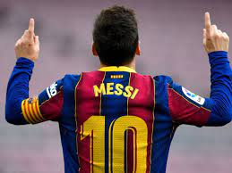
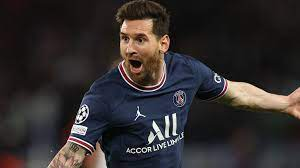
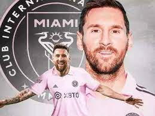
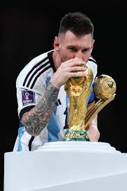

Newell's Boys(3-6years old)
Messi's exceptional talent was evident from a young age. At the
tender age of four, he began playing for his local club, Grandoli,
coached by his father, Jorge. His prodigious skills quickly caught
the attention of Newell's Old Boys, a prominent Argentine club,
where he joined their youth team at the age of six.
At Newell's Old Boys, Messi continued to excel, scoring goals at an
astonishing rate and showcasing his mesmerizing dribbling skills.
His short stature, once seen as a disadvantage, became his asset,
providing him with an agility and balance that were unmatched.
La Masia(13-17years old)
At the age of 13, Messi's talent caught the eye of European scouts,
and he was offered a trial with Spanish giants FC Barcelona. Despite
initial concerns about his growth hormone deficiency, Messi's skills
were too undeniable to ignore. He moved to Spain with his family and
joined Barcelona's youth academy, La Masia.
Under the guidance of experienced coaches and surrounded by
exceptional young players, Messi thrived at La Masia. He continued
to develop his technical skills, gaining control over the ball like
no other player before him. His ability to weave through defenders,
create scoring opportunities, and finish with precision made him a
force to be reckoned with.

F C Barcelona(2004-2021)
Messi made his debut for Barcelona's senior team in 2004 at the age
of 17. He quickly established himself as a key player and helped the
team win the La Liga title in his first full season.
Over the next decade, Messi would lead Barcelona to an unprecedented
period of success. The team won 10 La Liga titles, four UEFA
Champions League titles, and three FIFA Club World Cups. Messi was
the star of the show, scoring goals and creating chances for his
teammates with ease.
PSG(2021-2023)
Lionel Messi played for Paris Saint-Germain from 2021 to 2023. He
joined the club after his contract with FC Barcelona expired.
Messi's contract with PSG was for two years, with an option for a
third year.
In his 2 season with PSG, he helped the club win the Ligue 1 title
and reach the semi-finals of the UEFA Champions League.
Messi left PSG at the end of the 2022-23 season after his contract
expired


Inter Miami(2023- continues)
Lionel Messi is currently playing for Inter Miami CF. He joined the
club in July 2023. n his first season with Inter Miami, Messi scored
11 goals in 14 appearances. He helped the club reach the MLS
playoffs for the first time.
Messi is a key player for Inter Miami and is expected to help them
win their first MLS Cup. He is a popular player with the fans and
his teammates, and he is sure to become a legend of the club.
ARGENTINA
Lionel Messi's career with the Argentina national team is one of
the most decorated in history, marked by individual brilliance,
team achievements, and a deep connection with his homeland.
Messi's international journey began at the Under-20 level, where
he led Argentina to victory in the 2005 FIFA World Youth
Championship, earning the Golden Ball and Golden Shoe awards. His
senior debut came in 2005, and he quickly established himself as a
key player, scoring his first goal for his country in 2006.
Despite falling short of the ultimate title in those finals, Messi's individual performances were consistently outstanding. He was awarded the Golden Ball as the best player at the 2014 World Cup and the Copa América in 2015 and 2021.
Lionel Messi's international trophy cabinet has grown significantly in recent years, solidifying his legacy as one of the greatest footballers of all time. After years of near misses, Messi finally led Argentina to victory in the 2021 Copa América, breaking his long-awaited international trophy drought. This triumph was followed by the crowning achievement of his career, guiding Argentina to glory in the 2022 FIFA World Cup.
